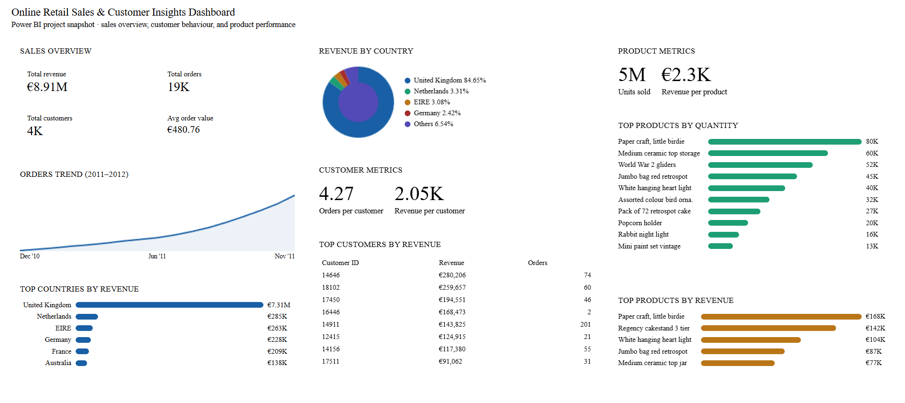
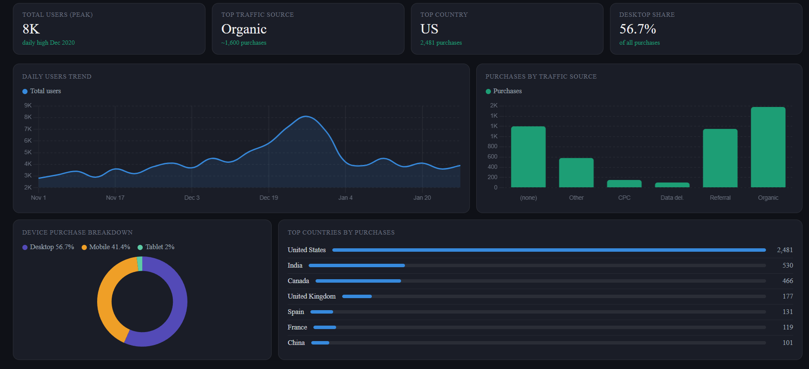
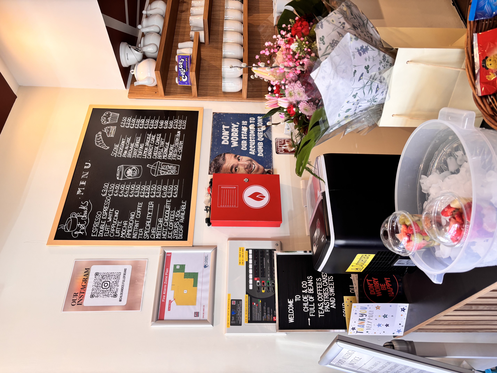

What I've built
A selection of projects showcasing data analysis, statistical modelling, business intelligence, data visualization.

Power BI · Customer Insight · Retail AnalyticsBuilt a multi-page Power BI dashboard to analyze online retail performance, customer contribution, and product trends. The project focused on understanding how revenue is distributed across countries, which customers drive the most value, and what products should be prioritized in marketing and promotion strategies.
📊 €8.9M revenue analysed · 500K+ transactions exploredView Project →

Dashboard · Traffic Sources · E-commerceDeveloped a dashboard exploring user trends, purchases by traffic source, device purchase breakdown, and country-level performance. This project highlights how marketing teams can evaluate acquisition channels, understand user behavior, and identify where conversions are strongest.
📉 Traffic source analysis · Device and country insightsView Project →

Brand Audit · Research · Digital PresenceDesigned a practical brand audit and owner interview framework to evaluate a local coffee shop’s digital presence. The project explored customer profile, social media activity, online discoverability, reviews, and marketing challenges to identify opportunities for stronger visibility and engagement.
🎯 Customer insight · Digital presence evaluationView Project →
 Python · Statistical Analysis · Data Visualization
Python · Statistical Analysis · Data Visualization
Analyzed 648,234 records of European air traffic data to evaluate the impact of COVID-19 on flight operations across countries. Applied hypothesis testing, ANOVA, t-tests, and linear regression to identify significant changes, seasonal patterns, and recovery trends across major European airports.
✈️ 648K+ flight records analysed · Statistical modellingView Project →